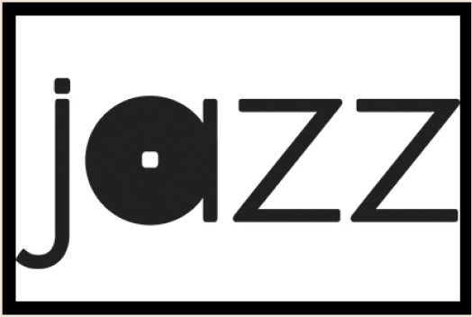
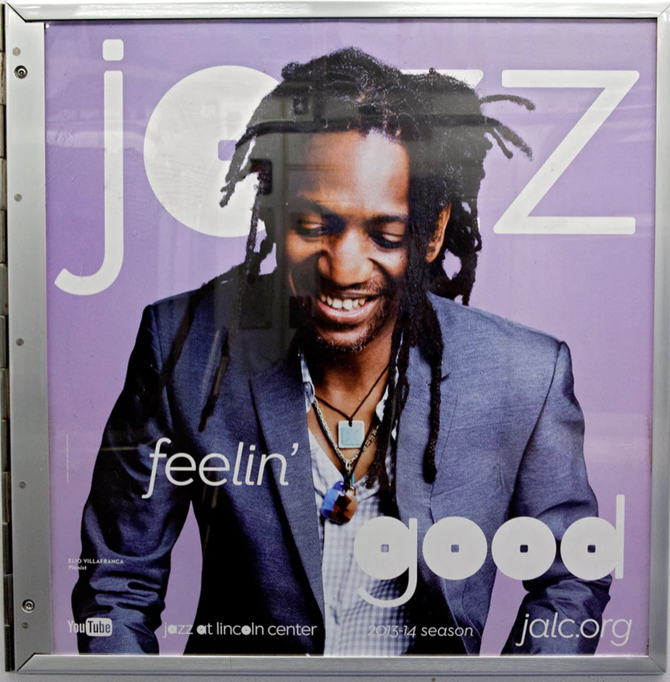
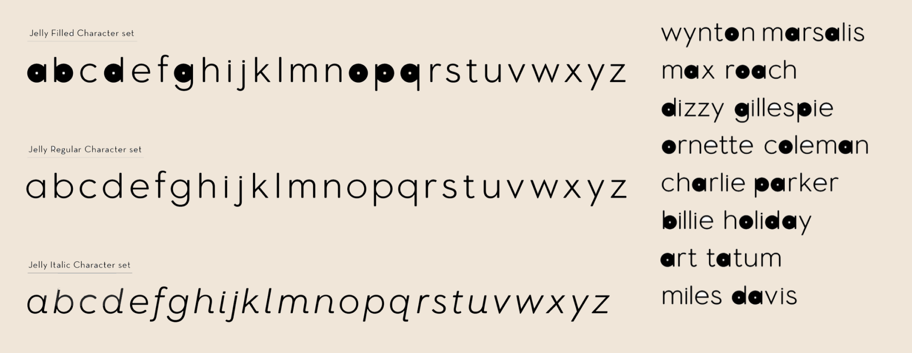
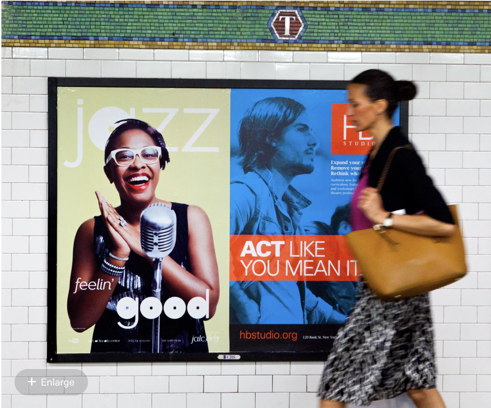
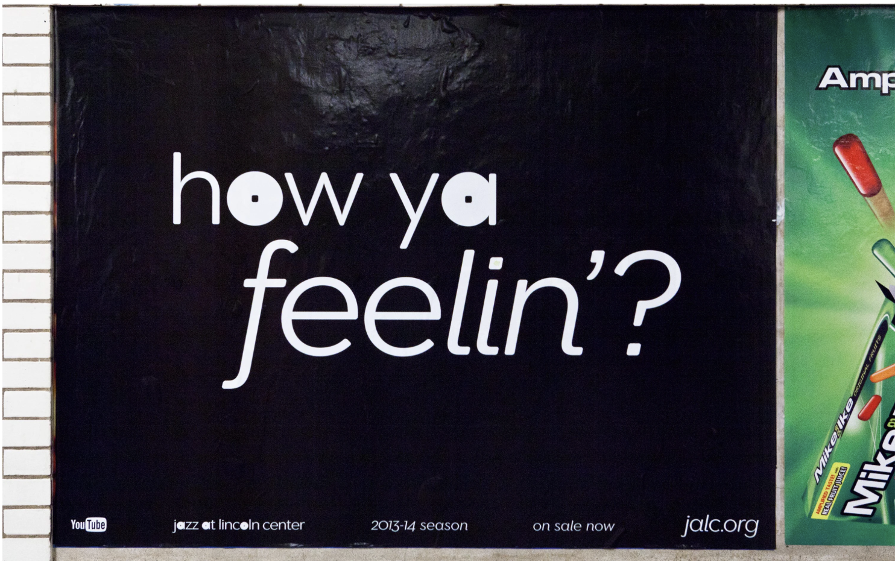
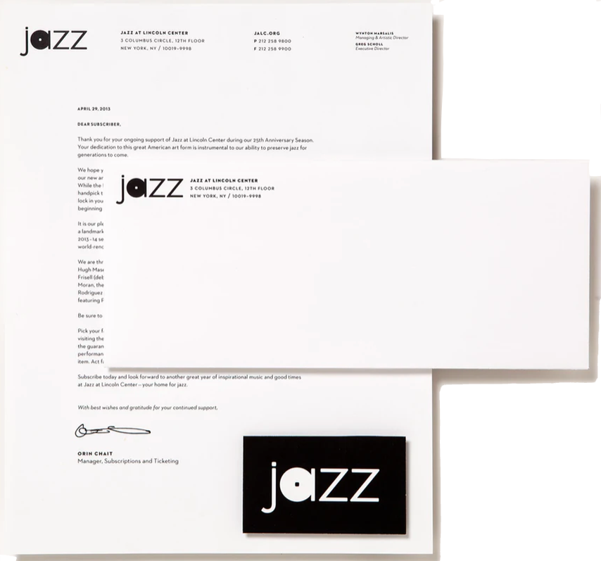

Jazz at Lincoln Center


O logotipo Jazz original foi projetado em Eagle Light e acompanhado por Neutraface 2 como fonte secundária. Para a nova identidade, desenhamos o logotipo existente usando o Neutraface, arredondaram o ponto quadrado no “a” e aumentaram as formas das letras. O alfabeto completo foi digitalizado e alternado pelo designer de tipo Jeremy Mickel como fonte personalizada para a instituição . O novo tipo de letra é apropriadamente chamado Jelly Roll, em homenagem à lendária pianista de jazz Jelly Roll Morton.




